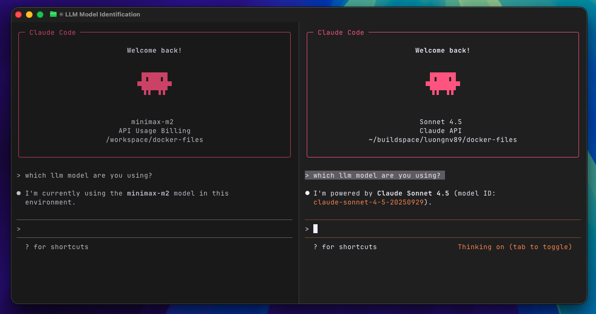
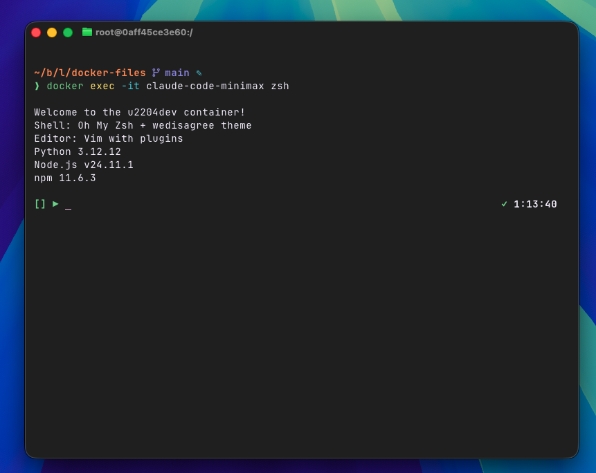

Picture this: You're deep into a coding session, relying on Claude Code to help you navigate complex architecture decisions, when suddenly—boom—you hit your weekly token limit. Frustrating, especially when you're in the zone.
I've been there. Despite having Claude Code Max, I kept running into usage limits right when I needed AI assistance most. Around the same time, I had $55 in Minimax credits sitting idle and heard great things about Minimax M2's performance.
That's when I had a simple idea: What if I could run two Claude Code instances simultaneously—one using Claude Code Max on my host machine, and another running Minimax M2 inside a Docker container?
The result? Two fully functional Claude Code instances working in parallel, with zero action when switching between AI models.
Running two instances gives you:
docker-files Project I created a collection of pre-configured Docker images to solve the eternal developer problem: setting up consistent development environments. Instead of configuring shells, editors, and dependencies every time you switch machines, you can use ready-made images.
We'll use the u2204dev image—a carefully crafted Ubuntu 22.04 development environment featuring:
Full documentation is available in u2204dev/README.md.
Notes: You can use any docker container or VM which can run Claude Code and can access to the project that you want Claude to work on
Run this command to create your containerized environment:
docker run --name claude-code-minimax -it -v "$PWD":/workspace -p 3000:3000 luongnv89/u2204dev zsh
This command:
claude-code-minimax for easy reference/workspace inside the containerluongnv89/u2204dev image with Oh-My-ZshYou'll be dropped into a Zsh shell inside the container.

Inside the container, install Claude Code:
# Install Claude Code CLI
npm install -g @anthropic/claude
# Verify installation
claude --version
Edit or create the Claude Code configuration file located at ~/.claude/settings.json with the UPDATE_YOUR_MINIMAX_API_KEY with the Minimax API key that you have created earlier.
{
"env": {
"ANTHROPIC_BASE_URL": "https://api.minimax.io/anthropic",
"ANTHROPIC_AUTH_TOKEN": "<UPDATE_YOUR_MINIMAX_API_KEY>",
"API_TIMEOUT_MS": "3000000",
"CLAUDE_CODE_DISABLE_NONESSENTIAL_TRAFFIC": 1,
"ANTHROPIC_MODEL": "MiniMax-M2",
"ANTHROPIC_SMALL_FAST_MODEL": "MiniMax-M2",
"ANTHROPIC_DEFAULT_SONNET_MODEL": "MiniMax-M2",
"ANTHROPIC_DEFAULT_OPUS_MODEL": "MiniMax-M2",
"ANTHROPIC_DEFAULT_HAIKU_MODEL": "MiniMax-M2"
}
}
Tip: after installing claude-code, there is no folder ~/.claude, you can just start claude and select anything, then quit Claude Code by Ctrl + C x 2 times. Now you have ~/.claude folder. Then from here you can create settings.json file
You now have two Claude Code instances:
Instance 1 (Host Machine)
Instance 2 (Docker Container)
docker exec -it claude-code-minimax zshAttach to your container:
docker exec -it claude-code-minimax zsh
Start Claude Code as normal
claude
Both instances operate on the same workspace (your projects in ~/workspace), so changes made by either are immediately visible to both.
The beauty of this setup:
Example workflow:
This Docker approach works with other AI models too:
GLM 4.6 from Z.AI - official document
{
"env": {
"ANTHROPIC_AUTH_TOKEN": "your_zai_api_key",
"ANTHROPIC_BASE_URL": "https://api.z.ai/api/anthropic",
"API_TIMEOUT_MS": "3000000"
}
}
Local LLMs with Ollama or LMStudio
Port Binding
-p 3000:3000 for React dev servers, -p 8000:8000 for Python appsWorkspace Management
docker run -v "$(pwd)/my-project:/workspace"/workspace) is shared between your host and containerQuality Assurance
Container won't start?
docker logs claude-code-minimax
API key issues?
# Verify the key is set
echo $MINIMAX_API_KEY
# Test directly
curl -H "Authorization: Bearer $MINIMAX_API_KEY" https://api.minimaxi.chat/v1/models
Port conflicts?
# Check what's using the port
lsof -i :3000
# See all active containers
docker ps
Can't attach to container?
# Make sure it's running
docker ps -a
# Restart if needed
docker start claude-code-minimax
Running two Claude Code instances in parallel is surprisingly simple and incredibly useful. With Docker for environment isolation and multiple AI services, you get extended productivity, redundancy, and better results through model comparison.
The setup takes about 10 minutes and pays dividends in productivity. You can work around limits, compare outputs, and get more value from your AI subscriptions.
Have you tried running multiple AI models in parallel? Share your experience or questions in the comments!